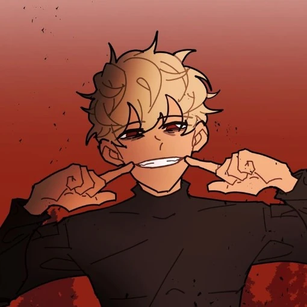

Aiden Clark is a protagonist in School Bus Graveyard. He debuted in Episode 1, and is an incredibly eccentric teenage boy, notable by the fact he's always seen smiling.
Aiden is an incredibly talkative boy, seen yapping Ashlyn's ears off when they first meet. He's also seen as a thrill seeker, as he enjoys things such as skydiving, racing, and other activities. He also turns around and sprays a phantom in the eyes when he, Ben, and Ashlyn are being chased. He's unafraid to talk down to others, as seen when he butts heads with Tyler after Tyler begins to yell at Ashlyn.
Aiden Clark is an average height boy, standing at 5'4. He has tan skin and crimson red eyes but has been seen with dark brown eyes as a child. He has incredibly thin black brows. He has blonde hair that fluffs out around his head, and bangs that swirl to the right side of his head. It's canon that his hair was black, he admits to dying his hair. He's usually seen wearing clothes with smiley faces on them. In the phantom dimension, he can be seen wearing the black protective suit that he purchased. In season 2, episode 90, we find out that he wears contact lenses to help him see as well as to change his eye colour to red.